Krakow Transport Network Analysis
Results Dashboard
2. GTFS Data Analysis
Trips per Route & Direction
4. Segment Utilization
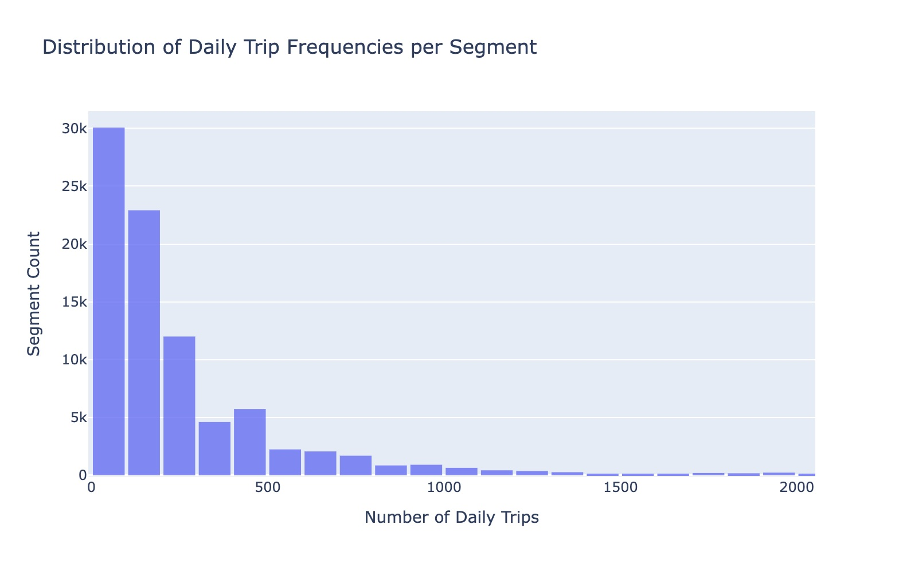
Segment Trip Distribution
Top 20 / Bottom 20 Segments
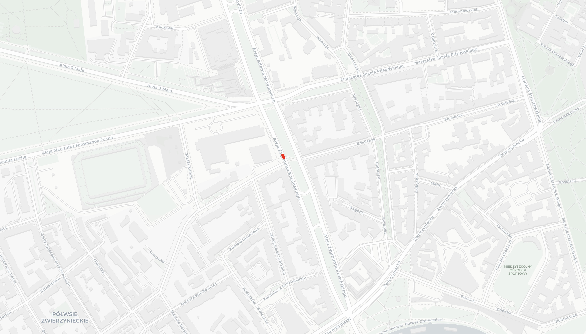
Busiest Segment Map
5. GTFS Stop Network & Centrality
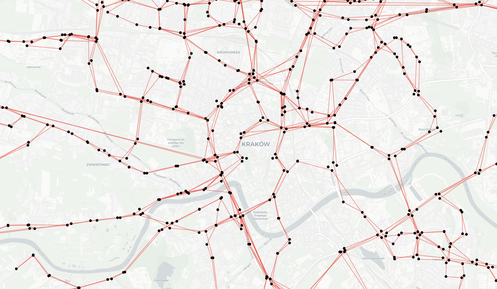
GTFS Stop Network Graph
Eigenvector Centrality
PageRank Centrality
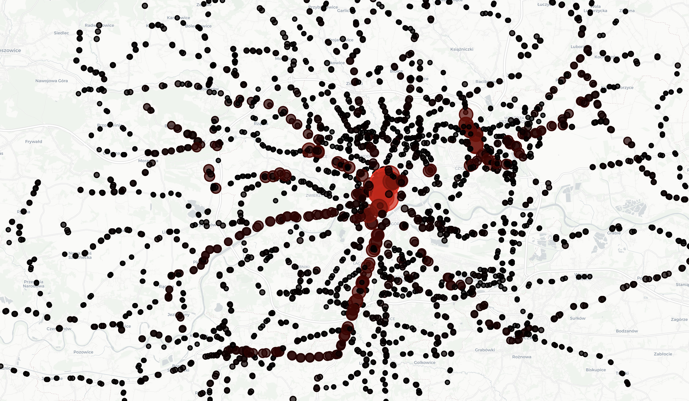
Betweenness Centrality
Degree Centrality
6. OSM Street Network
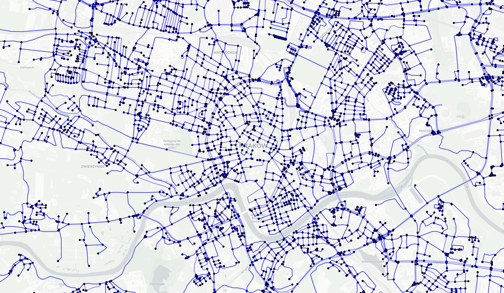
Krakow OSM Streets Graph
7. Multimodal Network
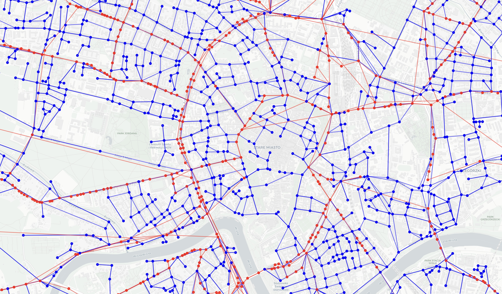
Multimodal Network
8. Network Flow Capacities
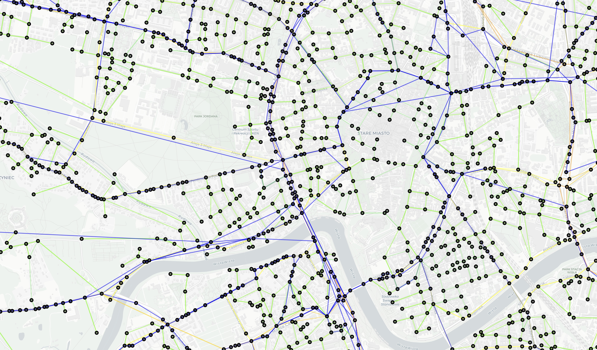
Network with Flow Capacities
9. Multimodal Centrality & Corridors
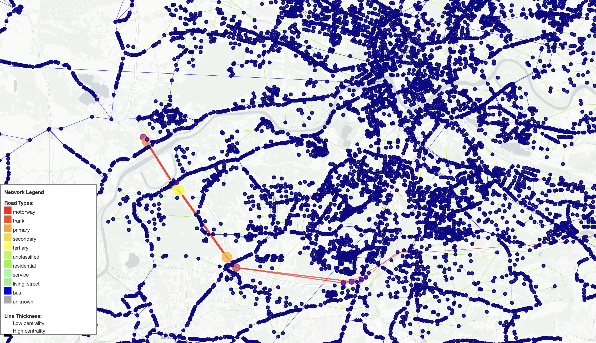
Eigenvector Centrality (Multimodal)
Filtered Eigenvector Centrality
Superhub Corridors
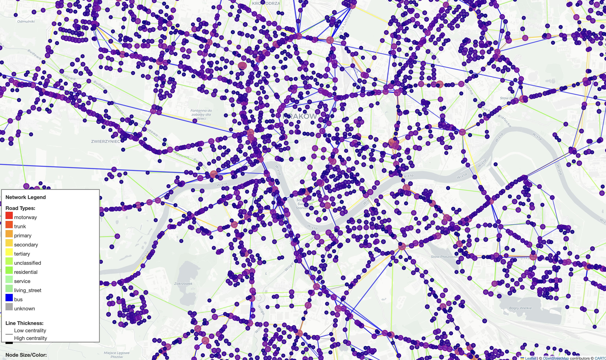
PageRank Centrality (Multimodal)
Top 10 PageRank Nodes
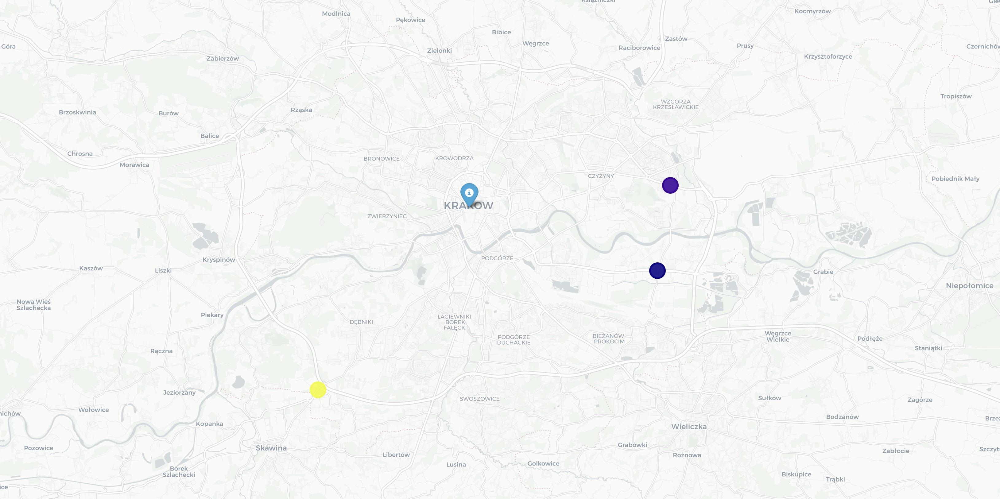
PageRank Nodes Far from Center
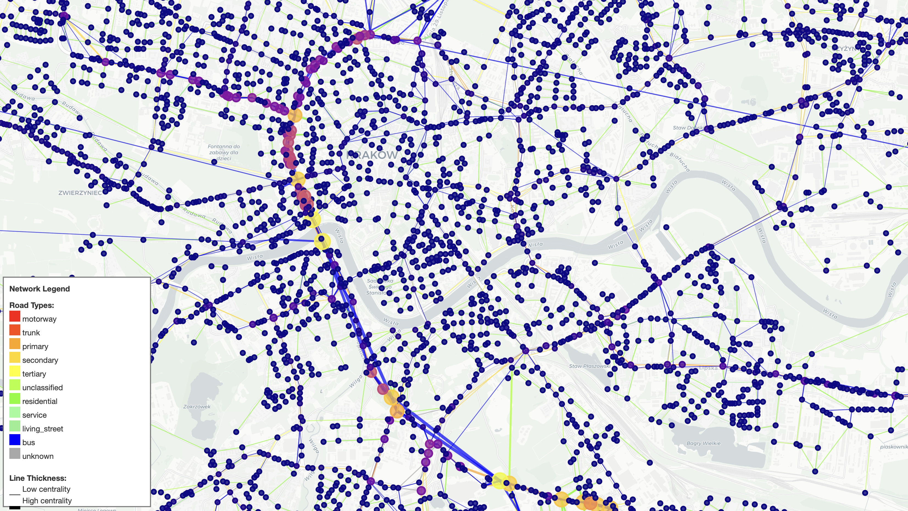
Betweenness Centrality (Multimodal)
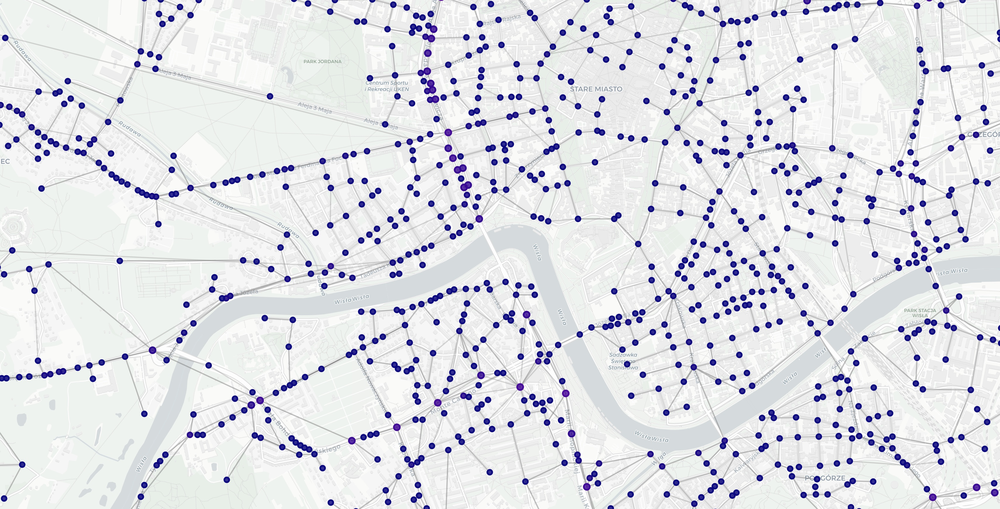
Betweenness Centrality (Disrupted)
Top 10 Betweenness Nodes
Top 10 Betweenness Nodes (Disrupted)
Degree Centrality (Multimodal)
Dynamic Scheduling/Accessibility
Edge Betweenness Centrality
10. Critical Node Analysis
Critical Nodes Map
Critical Nodes Plot